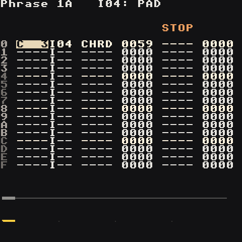

Commands
Commands live in the two command columns of a phrase and the three columns of a table. Each is four letters plus a 4-digit hex value, usually written aabb. Put the cursor on a ---- column and press Select to pick from the list.

Where it goes matters:
- On the same step as a note, a command shapes that note.
- On a step without a note, it changes whatever is already playing on that track.
- A note with an instrument number resets that instrument's ramps. A note without one (
I--) keeps sweeps and fades running.
Timing: 1 step = 6 ticks at the default groove. Ramp speeds (aa) count in groups of ticks — bigger aa = slower.
The ones you'll use every day
| Command | Value | Does | Try |
|---|---|---|---|
VOLM |
aabb |
volume to bb, ramping over aa (00 = instant) |
VOLM 0050 ghost note · VOLM 4000 slow fade out |
KILL |
--bb |
stop the note after bb ticks |
KILL 0000 cut now · KILL 0003 half a step |
CHRD |
abcd |
turn the note into a chord: the note picks which chord, the value picks what kind (each digit = also play the note that many steps up). On a hyper synth it replaces the six chord notes (the chord, then again an octave up) |
A 2 + 0037 = A minor · C 3 + 0047 = C major |
ARPG |
abcd |
cycle root, +a, +b, +c, +d every tick | ARPG 0047 chiptune major |
RTRG |
aabb |
retrigger every bb ticks |
RTRG 0003 32nd roll · RTRG 0002 tremolo |
PTCH |
aabb |
bend to bb semitones (signed) at speed aa |
PTCH 1002 up 2 · PTCH 10FE down 2 |
LEGA |
aabb |
slide into the note from bb semitones away |
LEGA 10F4 slide up from an octave below |
FCUT |
aabb |
filter cutoff to bb at speed aa |
FCUT 60C0 open over ~4 bars |
FRES |
aabb |
filter resonance to bb at speed aa |
FRES 00C0 squelch now |
PAN |
aabb |
pan to bb (00 left, 7F centre, FE right) |
PAN 2000 sweep left |
DLAY |
--bb |
start the note bb ticks late (up to the step's length) |
DLAY 0003 push a note behind the beat |
Randomness
Two commands that make every pass a little different, as on the M8:
| Command | Value | Does | Try |
|---|---|---|---|
RAND |
00bb |
adds a random amount, up to bb, to the other command on the same step. On its own it moves the note up to bb semitones, staying in the song's Key/Scale |
VOLM 0060 + RAND 0060: velocity between 60 and C0 · FCUT 0040 + RAND 0080: a wandering filter · RAND 000C alone: a new melody every loop |
CHNC |
00bb |
the note plays with a chance of bb/FF (FF always, 80 half the time, 00 never) |
ghost hats with CHNC 0060 · a fill that only sometimes happens |
Put them on a step with a note. Both can go on one step (CHNC in one column, RAND in the other).
Random numbers are drawn per track. SEED (below) makes them repeat.
From the M8
Sequencer commands after the Dirtywave M8's (RET, NTH, SED, PVB, TIC, THO, TSP, SCG). They work the same with synth, sample and MIDI instruments, because the sequencer runs them. ROLL, VIBR, SEED, NTH, TRSP and SCAL go in a phrase; TICK and THOP also work inside a table.
| Command | Value | Does | Try |
|---|---|---|---|
ROLL |
--xy |
strike the note again every y ticks until the next note. Each hit changes the volume by x: 1-7 quieter (x×8 per hit, the roll stops when it reaches silence), 9-F louder ((x-8)×8), 0/8 steady. The first hit starts from the step's VOLM, or the instrument's volume. y=0: one extra hit, x ticks later. 0000 stops |
ROLL 0003 snare roll · VOLM 0020 + ROLL 00F2 a roll that swells in · ROLL 0043 echoing stutter · ROLL 0030 flam |
VIBR |
--xy |
vibrato: speed x (a cycle every 64/x ticks, so it follows the tempo), depth y sixteenths of a semitone. Ends with VIBR 0000 or the next note with an instrument number |
VIBR 0048 singer's vibrato · VIBR 00C3 fast shimmer on a pad |
SEED |
--bb |
restart this track's random numbers from seed bb: every RAND and CHNC after it comes out the same each time. Put it on step 0 to freeze a random melody you like |
SEED 0007 on step 0 + RAND 000C on every step: one "random" tune that loops. Change bb for another |
NTH |
--xy |
the note plays only on pass x of every y times its phrase plays on this track (passes count from when you press Start). x=0: on every pass except each y-th |
NTH 0014 a crash only on the first of 4 bars · NTH 0044 a fill on the 4th · NTH 0002 a hat that skips every other bar |
TICK |
--bb |
this track's table moves one row every bb ticks instead of every tick (in a table: that table's own speed). 0000 goes back to the groove |
TABL 0003 + TICK 0006 a table that steps once per step, like a slow arpeggio |
THOP |
--0b |
this track's table jumps to row b, all three columns (in a table: jump there on this row) |
restart a filter sweep half way through a phrase |
TRSP |
--bb |
transpose the whole song by bb semitones (01-30 up, FF-D0 down), like Project → Transpose |
TRSP 0002 up a tone for the last chorus · TRSP 00F4 an octave down |
SCAL |
aabb |
set the song's Key to aa (00 C … 0B B, 0C no key) and its Scale to number bb (the order on the Scale screen: 15 major, 03 minor, 20 minor pentatonic, 2E your Custom scale). Note editing and RAND follow it from then on |
SCAL 0915 A major for a bridge, back with SCAL 0003 |
TRSP and SCAL change the song's settings, the same way TMPO sets the tempo: the song keeps them when it stops.
A ROLL on a step with a note re-strikes that note; on a step without one it re-strikes whatever is still ringing. The random numbers SEED restarts belong to its track only, so a seeded bassline doesn't freeze the drums' CHNC.
Song-level
| Command | Value | Does |
|---|---|---|
TMPO |
--bb |
set tempo to bb (hex BPM) |
GROV |
--bb |
switch this track to groove bb |
TABL |
--bb |
start table bb on this track |
HOP |
--bb |
when the phrase reaches this step, go on to the next phrase at its step bb (a 12-step bar: HOP 0000 on step C). HOP 00FF stops the track there. In a table: jump to row bb, aa times |
STOP |
---- |
stop the song |
Sound shaping
| Command | Value | Does |
|---|---|---|
FLTR |
aabb |
set cutoff aa and resonance bb instantly |
PFIN |
aabb |
fine pitch toward bb |
CRSH |
aa-b |
drive aa, bit crush b (samples); synths use aa as drive |
TIMB |
aabb |
macro synth: timbre to bb at speed aa |
COLR |
aabb |
macro synth: color to bb at speed aa |
Samples only
| Command | Value | Does |
|---|---|---|
PLAY |
00bb |
play mode for this note: 00 forward, 01 reverse, 02 loop, 03 rev-loop, 04 pingpong, 05 rev-pingpong, 06-08 osc, 09 loop-sync (play modes). With a note: the note starts over in that mode (reverse from E); without: the sound turns around from where it is |
PLOF |
aabb |
jump to position aa/256 of the sample, or move by bb chunks |
LPOF |
aaaa |
shift the loop window (wavetable scanning, stretch) |
SLCE |
pick a slice | |
FBMX / FBTN |
aabb |
feedback mix / tune |
IRTG |
aabb |
retrigger and transpose |
MIDI
| Command | Does |
|---|---|
MDCC |
send MIDI CC aa with value bb |
MDPG |
send program change |
MVEL |
set note velocity |
Tables: commands that play themselves

A table is a little 16-row loop of commands that advances one row per tick. Point an instrument at it (Instrument → synth LFO page or sample Motion page → table, auto) or start it from a phrase with TABL.
Example — a trance gate on a pad:
00 VOLM 00FF
01 VOLM 0000
02 HOP 0000 (jump back to row 00)
Example — a slow arpeggio, one row per step (TICK in the table itself):
00 PTCH 0000 TICK 0006
01 PTCH 000C
02 PTCH 0007
03 HOP 0000
Example — a fast octave, root, fifth arpeggio:
00 PTCH 000C
01 PTCH 0000
02 PTCH 0007
03 HOP 0000